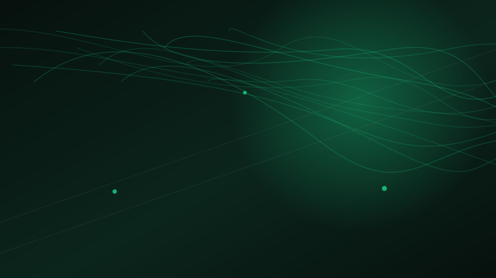
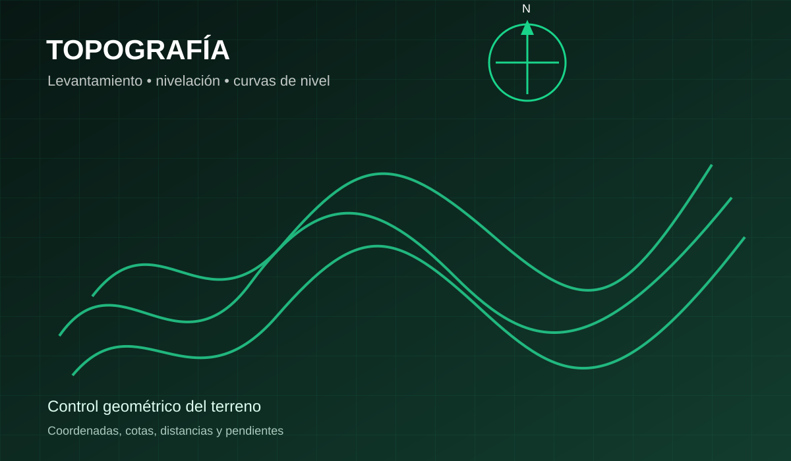
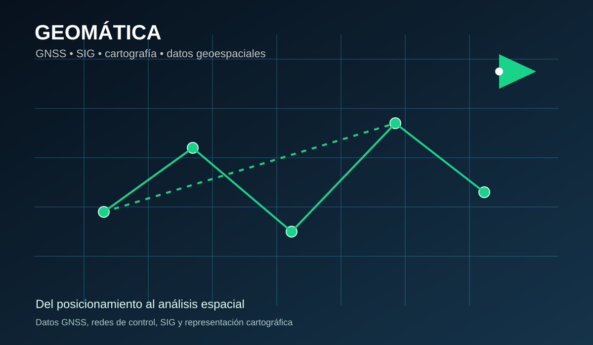
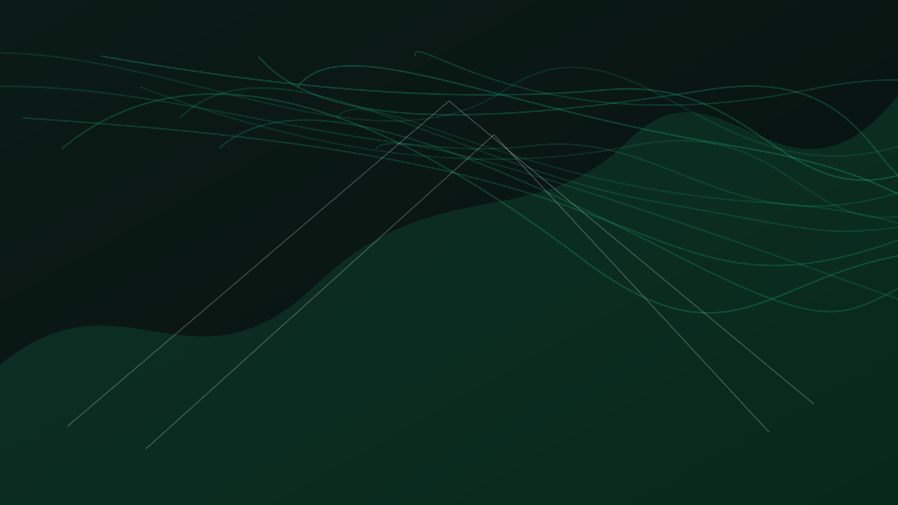
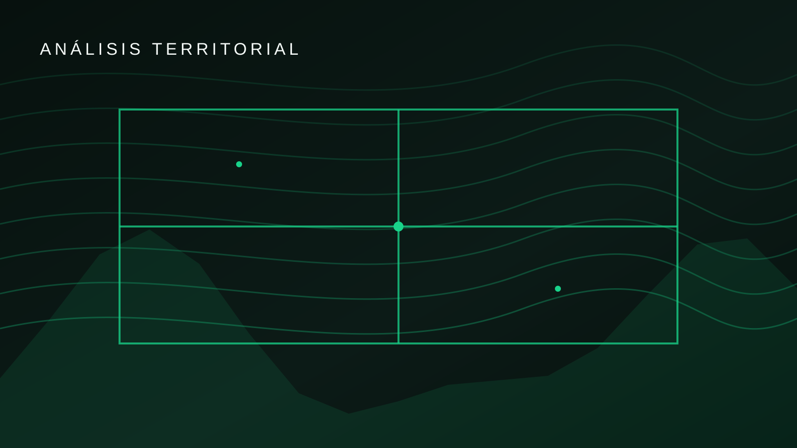
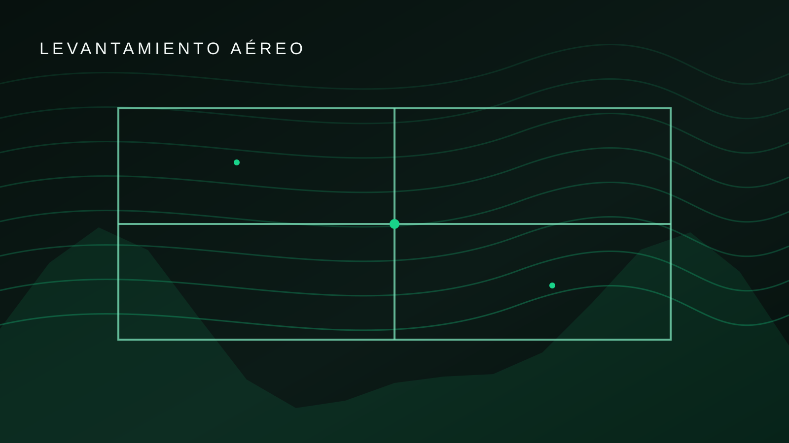
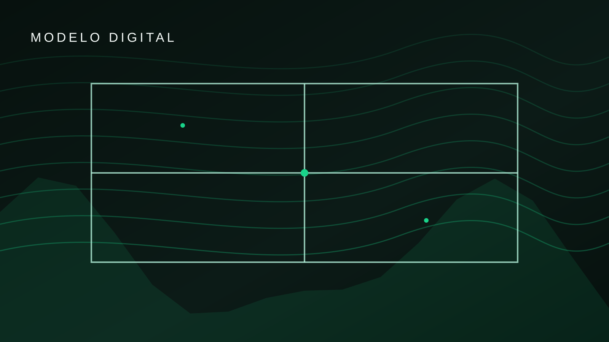

01
Topografía
Levantamientos planimétricos y altimétricos para conocer con precisión las características del terreno.

TOPOGRAFÍA • GEOMÁTICA • CARTOGRAFÍA
Soluciones profesionales para levantamientos, georreferenciación, fotogrametría y análisis de información geoespacial.
NUESTROS SERVICIOS
Capturamos y procesamos información espacial para proyectos de ingeniería, construcción y planificación territorial.
Levantamientos planimétricos y altimétricos para conocer con precisión las características del terreno.
Posicionamiento y control de coordenadas mediante tecnologías GNSS y RTK.
Generación de ortofotos, modelos digitales y productos tridimensionales.
Elaboración y visualización de información cartográfica digital.
Gestión y análisis de información geográfica para apoyar decisiones territoriales.
Replanteos, seguimiento geométrico y control de proyectos de construcción.
CAMPO Y OFICINA
Visualiza de forma rápida los principales campos de trabajo de GeoTop.

Levantamientos, nivelación, coordenadas y control geométrico.

GNSS, SIG, cartografía y análisis de información espacial.

TECNOLOGÍA
Utilizamos diferentes tecnologías de captura y procesamiento para convertir el territorio en información útil.
PROYECTOS

Información geoespacial y análisis del terreno.

Captura y representación del territorio.

Información para análisis topográfico.
HERRAMIENTAS GEOMÁTICAS
Calcula pendiente, distancia, azimut, área y perímetro directamente desde el navegador.
Coordenadas planas: Norte (N) y Este (E), azimut desde el Norte en sentido horario.
Ingresa una coordenada por fila. Usa Norte y Este en metros y cierra automáticamente la poligonal.
| Punto | Norte (m) | Este (m) |
|---|
VISOR GEOGRÁFICO
Traza una línea con 2 a 10 vértices; GeoTop consulta la elevación a lo largo del trazado (servidor FastAPI → Open-Meteo) y calcula longitud, azimut, desniveles y pendientes por tramo.
Back-end: API propia en FastAPI (main.py) que consulta Open-Meteo Elevation (Copernicus DEM GLO-90, CC BY 4.0; uso no comercial). Si el servidor no está disponible (p. ej. en GitHub Pages), la página consulta Open-Meteo directamente. Requiere Internet.
CONTACTO
Déjanos los datos de tu proyecto y nos pondremos en contacto contigo.